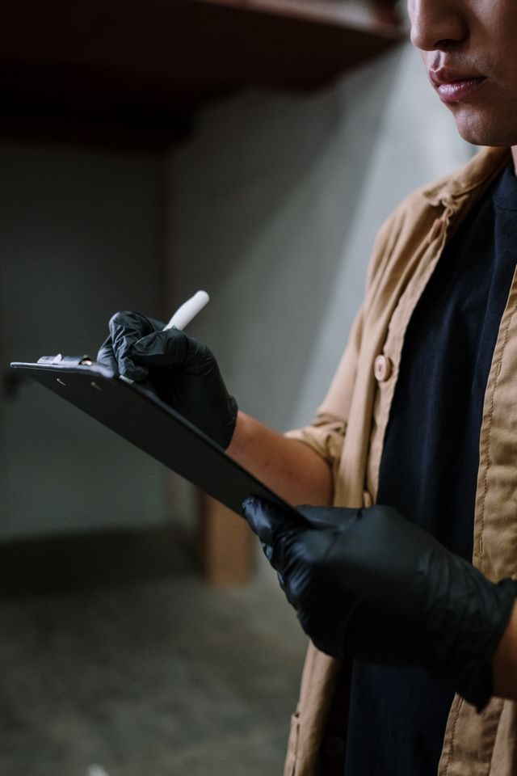
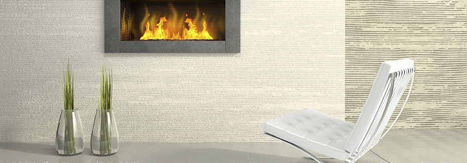
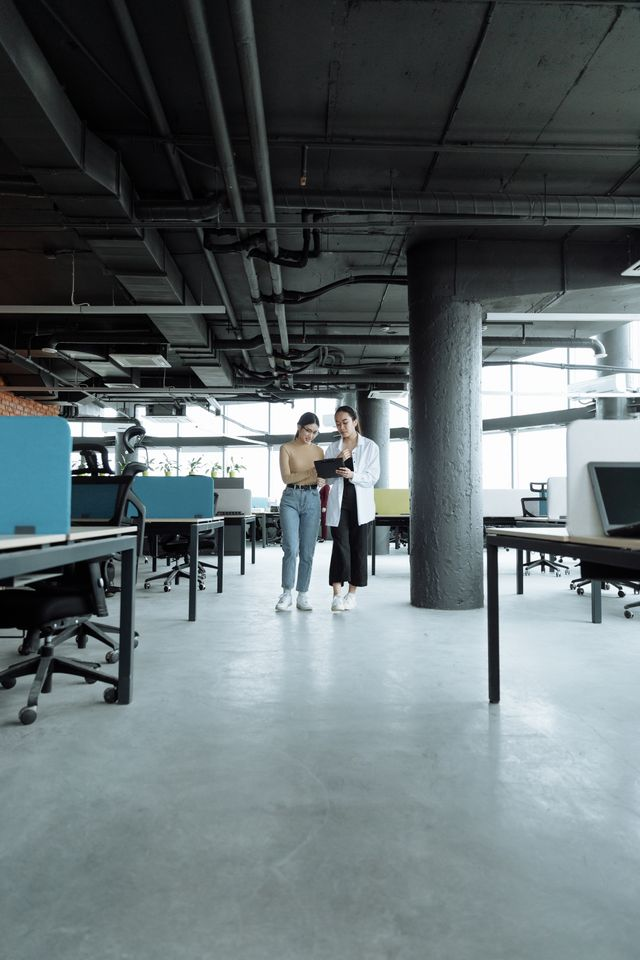

Koulutus ja opastus – yrityksissä ja oppilaitoksissa

Teemme sopimuksen aikaista asiantuntijapalvelua ja laadunvalvontaa, joilla varmistetaan sopimuksen mukainen palvelutoiminta ja puhtauden laatu.
Siivous Voitto Oy on perustettu 1991. Vuodesta 2005 Siivous Voitto Oy on keskittynyt siivouksen konsultointi- ja asiantuntijapalveluihin. Siivouksen ja tilojen puhtaanapidon asiantuntijuus perustuu yli 20 vuoden työkokemukseen puhdistuspalvelujen johtamis- ja tuottamis- sekä kehittämistyöstä yksityiseltä ja julkiselta sektorilta. Siivous Voitto Oy:n toiminnan perusajatuksena on löytää yhdessä Asiakkaan kanssa Paras ratkaisu puhdistuspalvelujen tuottamiselle. Siivous Voitto Oy sijaitsee Porvoossa.

Kiinteistön tilojen huolto- ja ylläpitokustannukset ovat merkittäviä vuositasolla. Hallittu ja suunniteltu puhtaanapito on taloudellista ja siivouksen kustannus vastaa tarkoituksenmukaista laatua. Tarjoamme asiantuntemusta puhdistuspalvelujen järjestämisestä ja kehittämisestä.

Teemme sopimuksen aikaista asiantuntijapalvelua ja laadunvalvontaa, joilla varmistetaan sopimuksen mukainen palvelutoiminta ja puhtauden laatu.
Osa hankintaan liittyvien asiakirjojen laadinnasta, esimerkiksi siivouspalvelukuvausten laadinta ja laadullisten kriteerien määrittäminen.

Julkinen hankintalaki edellyttää tavara- ja palveluhankinnoissa julkista kilpailutusta, mikäli hankinta ylittää Kansalliset kynnysarvot. Yksityisten yritysten siivoushankinta ei ole sidottu julkisen hankinnan määräyksiin.